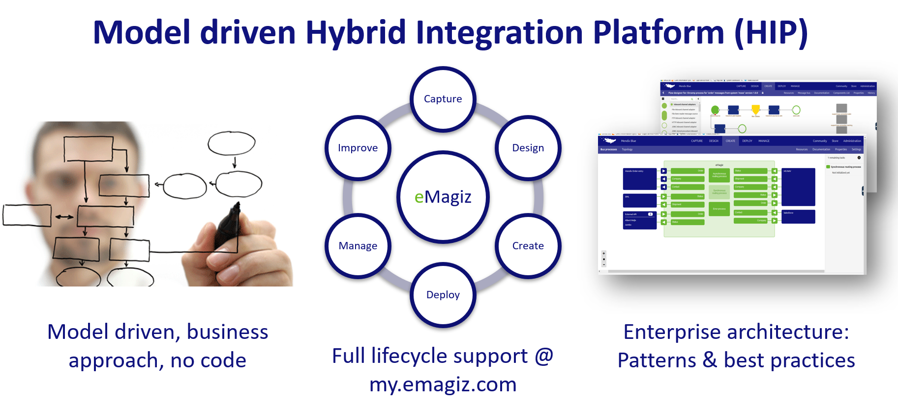

We position eMagiz as the model driven integration platform as a service, driving the [bi-modal](https://www.gartner.com/it-glossary/bimodal/) IT strategy of Gartner.
Our positioning is based on 3 pillars:
Pillar 1: architected models.
Pillar 2: full lifecycle support.
Pillar 3: built-in patterns and best practices.
1. Pillar 1: architected models. We empower citizen developers (working on [mode 2](https://www.gartner.com/it-glossary/bimodal/) initiatives) with architected, model driven design tools that
2. Pillar 2: full lifecycle support. At my.emagiz.com we fully support the lifecycle of integrations, strongly focussing on jointly collecting and sharing the required information to rapidly connect mode 2 initiatives to the mode 1 ecosystem
3. Pillar 3: built-in patterns and best practices. We visualize the evolvement of enterprise architectures with models throughout the several lifecycle phases and implemented an extensive set of enterprise integration patterns and best practices
Combining architected models, full lifecycle support and built-in patterns and best practices, we drive the delivery of bi-modal IT. We help our customers increase their revenue and margins by reducing the time to market of mode 2 integrations and lowering the total costs of ownership to connect with the mode 1 ecosystem.
Let’s sum up the key facts and figures about eMagiz and our value proposition: